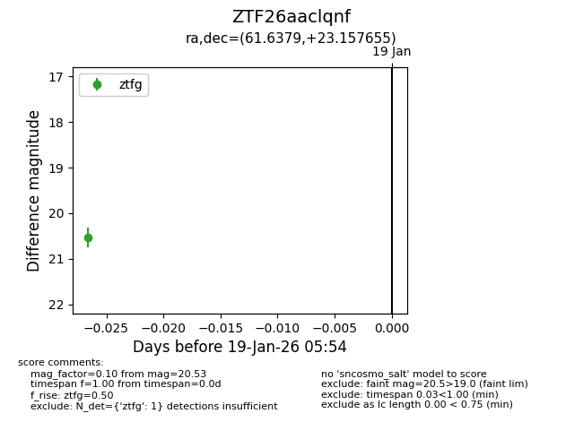
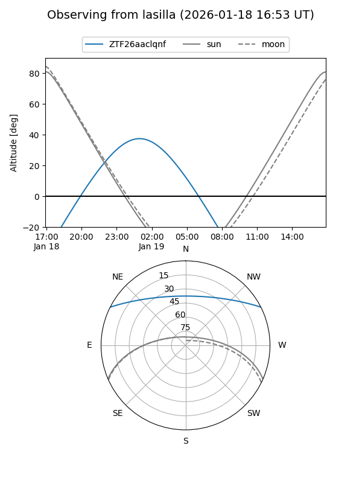
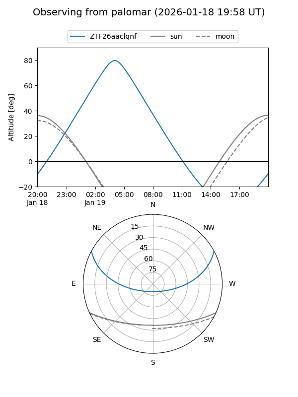

ZTF26aaclqnf
Target ZTF26aaclqnf at 2026-01-21 05:56
Aliases and brokers:
FINK: link
Lasair: link
ALeRCE: link
alt names
ZTF26aaclqnf (ztf,fink_ztf)
Coordinates:
equatorial (ra, dec) = 61.6379,+23.15766
equatorial (HMS+DMS) = 04:06:33.08,+23:09:27.56
galactic (l, b) = (170.7683,-21.09420)
Flags:
Photometry:
last ztfg=20.53
1 ztfg detections
Lightcurve

Visibility


Additional plots